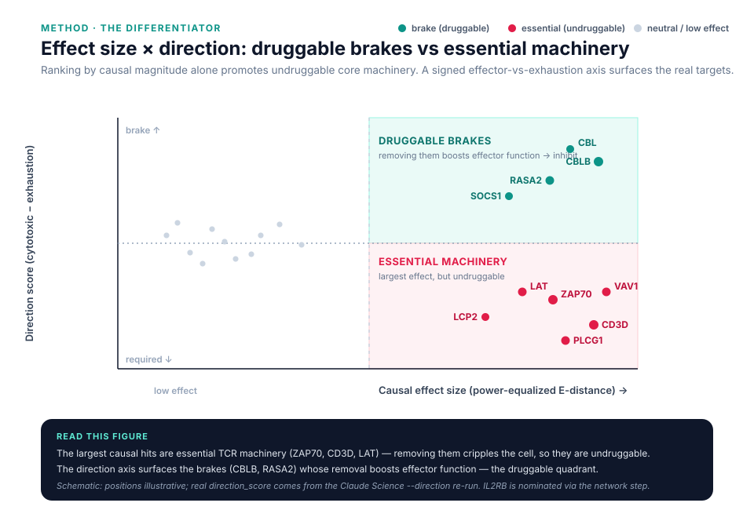
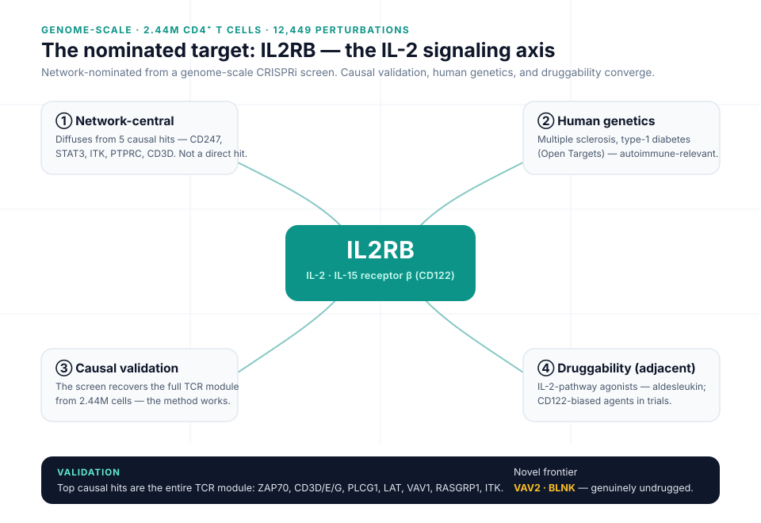

Built with Claude: Life Sciences · Research track
A reproducible pipeline that ranks CRISPR perturbations in primary human T cells by causal effect size, validates itself against known biology, then nominates a novel, genetically-concordant, druggable target — every step carrying Claude Science provenance.
The demo
Six beats — the question, Claude Science provenance, the method, validation on known biology, the IL2RB nomination, and the proposed experiment.
2:24 · 1080p silent motion cut. For the narrated 3-min submission, record voiceover onto IL2RB_demo_deck.pptx (verbatim script in the speaker notes) and screen-capture the live Claude Science provenance for the reviewer and hero beats.
What it does
Power-equalized energy distance with a permutation test — not p-values, which inflate with cell count. Viability and on-target gates included.
Unsupervised, it recovers the TCR-signaling core and re-nominates a Nature-validated target — so its novel calls are trustworthy.
Integrates the provided protein-interaction network and regulatory model to surface a druggable, genetically-concordant hero.
How it works
The differentiator
The largest causal hits are the essential TCR machinery — knocking them out cripples the cell, so they can't be drugged. A signed effector-vs-exhaustion direction axis separates those from the brakes, whose removal boosts effector function: the druggable quadrant where real targets live.

--direction re-run.The result
On the genome-scale Gladstone CRISPRi screen (2.44M CD4⁺ T cells, 12,449 perturbations), the ranking recovers the entire TCR-signaling module unsupervised. Diffusing that causal signal over the interactome re-discovers IL2RB — the IL-2/IL-15 receptor β — network-central among causal nodes, with multiple-sclerosis and broader autoimmune genetics, and drug-adjacent via IL-2-pathway agonists. VAV2 and BLNK mark the genuinely undrugged frontier.
Four independent lines of evidence — network centrality, human genetics, causal validation, and druggability — converge on the nomination.

Reproducible by design
Every artifact carries its exact code, environment, and a plain-language trail; a reviewer agent checks each claim against what actually ran — it caught a real statistical bug before it reached a figure. One command regenerates the ranking and figures from a clean clone.
git clone REPO_URL && cd pipeline
make smoke # unit-tests the core, anywhere
make hero # full ranking → outputs/